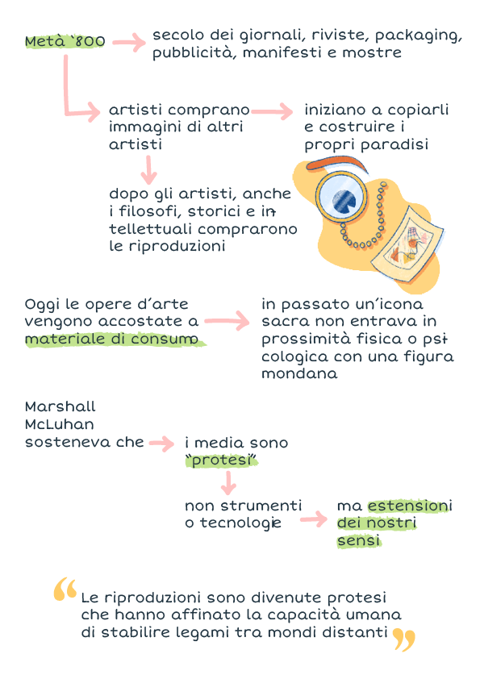
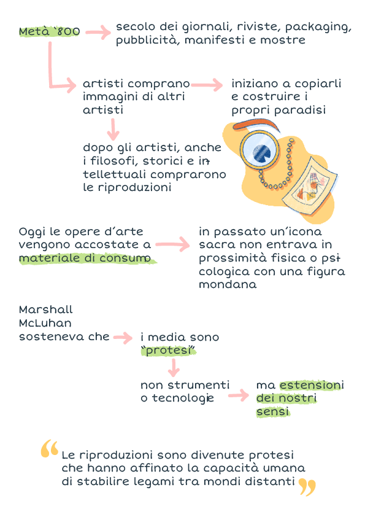

Flavia Gentile
il blog
torna agli articoli


Il paradiso secondo Romano, Morante e Falcinelli – 3 consigli pratici per collezionare immagini
In questo articolo prenderemo in considerazione la creatività come collezione variegata di immagini. Lo faremo tramite il punto di vista del designer Riccardo Falcinelli, ispiratosi alle scrittrici Elsa Morante e Lalla Romano.
Se vorrete continuare la lettura, troverete 3 consigli pratici per la collezione di immagini; altrimenti, potete andare direttamente all’infografica che riassume il paradiso secondo Falcinelli, Morante e Romano.
Il Paradiso nello studio di Lalla Romano
Leggendo “Figure” di Riccardo Falcinelli, mi sono imbattuta in un paradiso. Il capitolo “Come costruire un paradiso” si apre svelandoci un retroscena sullo studio della scrittrice Lalla Romano. Un giorno, infatti, l’amica e collega Elsa Morante le fa visita e, vedendo una parete tappezzata di ritagli e immagini variegate, esclama «Ah! Il paradiso!».

La collezione di immagini è qualcosa che riguarda tutti e che può far luce sul modo in cui ci rapportiamo a noi stessi, ai nostri ricordi e alla visione che abbiamo di ciò che ci circonda.
Vediamo allora come sviluppare e nutrire il nostro piccolo paradiso ispirandoci a Lalla Romano, Elsa Morante e Riccardo Falcinelli.
Raccolte di immagini analogiche e digitali
Tutti, anche coloro che non svolgono un lavoro puramente creativo, raccolgono iconografie. C’è chi lo fa meno consapevolmente – sullo sportello del frigorifero – e chi costruisce raccolte più strutturate.
È in questo contesto che nascono luoghi digitali come Pinterest, un sito che si basa sulla costruzione di bacheche visive. Falcinelli afferma che questo tipo di social soffrono della mancanza di uno spessore fisico, della corposità della polvere data dal passare del tempo.
In effetti, se ci pensiamo, risfogliare vecchi album fotografici ha un fascino tutto diverso rispetto allo scorrere nel passato delle nostre timeline digitali.
Anche dal punto di vista della condivisione – il tema del nostro tempo – il paradiso domestico di Lalla Romano è privato, non deve essere curato e mediato per essere visto da altri. Come afferma Falcinelli, è un “ideale emotivo”.
Questo articolo è un po’ un reminder che serve per rendervi più consapevoli riguardo una pratica comune. Non dovete per forza trovarci uno scopo preciso, una tecnica di crescita personale dettagliata, ma più una linea guida per iniziare una pratica che possa farvi bene.
3 consigli pratici per collezionare immagini
Creare un paradiso può sembrare semplice, ma ho pensato a tre consigli per avviare al meglio il vostro percorso di costruzione.
-
Non siate ossessionati dalla forma
Navigando il mondo delle immagini social, prima o poi tutti ci imbattiamo nelle ordinatissime scrivanie di Instagram o nei diari di Pinterest – un esercito di bullet journal, travel journal e scrap book da gioia per gli occhi.
Ecco, cercate di dimenticarli. Tutti – me compresa ovviamente – subiamo il fascino dei “contenuti instagrammabili”, ma provare a replicarli non è sempre una buona idea.
Spesso, infatti, gli standard estetici dei social sono scoraggianti, e aspirare a raggiungerli lascia sempre insoddisfatti.
È meglio concentrarci sulla nostra visione, senza inseguire ossessivamente la bellezza estetica, i washi tape sgargianti e le foto strappate ed incollate con cura – chi è su Pinterest sa probabilmente di cosa parlo.
-
Concentrate tutto in un unico posto
Non so esattamente quanti diari ho iniziato e mai finito nella mia vita. Ognuno aveva un tema diverso, una logica interna che avevo bisogno di separare dagli altri.
Durante gli anni ho imparato che bisogna stare attenti ad essere meno dispersivi possibile. Lavorate sulla densità, scegliete un luogo a cui affidarvi (un diario, una bacheca, una scatola ecc.) e continuate su quella strada.
Al tempo stesso, però, non fissatevi troppo su qualcosa che vi accorgete non funzionare. Se una tecnica non fa per voi, passate alla prossima senza pensarci troppo. Se funziona, non abbandonatela.
-
Non inseguite la coerenza tematica
Il bello del “paradiso” è proprio questo: unire mondi diversi usando come filo conduttore la nostra visione e le nostre esperienze.
Chi se ne frega se un dipinto di Botticelli si trova accanto ad una foto del red carpet di Zendaya. Accostarli secondo la nostra esperienza non ci renderà persone peggiori.
Anzi, creare connessioni è proprio il punto di questa pratica.
Conclusioni
Nell’articolo abbiamo osservato con più attenzione una pratica che probabilmente si trovava già nelle nostre vite. Adesso che la vediamo con più consapevolezza, possiamo usarla come strumento per noi stessi, per esaminare meglio il nostro gusto estetico, il nostro punto di vista e i nostri ricordi.
Questo paradiso è una rete di collegamenti il cui filo conduttore è la nostra esperienza. È un’attività che non richiede troppa cura e che, anzi, trae beneficio nella sua naturalezza.
Non è una cura, ma un modo per accompagnarci attraverso i nostri percorsi di crescita e per tenere viva la memoria.
 
